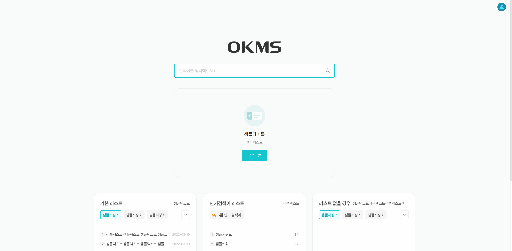

자사 솔루션 OKMS 리뉴얼
자사 솔루션 OKMS를 리뉴얼하는 프로젝트에서 퍼블리싱 담당하였습니다. SCSS를 팀내에 도입하였으며 아이콘, 타이포그래피 등 재사용이 가능하고 효율적으로 퍼블리싱할 수 있도록 신경쓰며 작업하였습니다. 개발 진행 중에 디자인 요청 없이 퍼블리싱단에서 바로 지원하며 빠르게 구축하였습니다. 기획서없이 진행되었던 프로젝트여서 사용성을 디자이너와 함께 고민하며 의견을 주고받으면서 작업하였으며 기획, 디자인단계에서 누락된 UI를 QA하며 작업하였습니다.
- 작업기간
- 2주
- 기여도
- 퍼블리싱 100%
퍼블리싱 리스트
아래 링크를 클릭하시면 새창으로 퍼블리싱 화면을 보실 수 있어요 😊
반응형
디자인 완료 후 퍼블리싱 진행하면서 반응형웹으로 개발스펙이 변경되어 퍼블리싱단에서 디자이너와 의논하여 분기점을 설정하였습니다. PC가 우선순위인만큼 반응형 중요도는 후순위여서 퍼블리싱단에서 디자인화면없이 UI가 깨지지 않도록 바로 작업하였습니다.
Color Variables
디자인 완료 후 퍼블리싱 진행하면서 반응형웹으로 개발스펙이 변경되어 퍼블리싱단에서 디자이너와 의논하여 분기점을 설정하였습니다. PC가 우선순위인만큼 반응형 중요도는 후순위여서 퍼블리싱단에서 디자인화면없이 UI가 깨지지 않도록 바로 작업하였습니다.
Verder Prefix
디자인 완료 후 퍼블리싱 진행하면서 반응형웹으로 개발스펙이 변경되어 퍼블리싱단에서 디자이너와 의논하여 분기점을 설정하였습니다. PC가 우선순위인만큼 반응형 중요도는 후순위여서 퍼블리싱단에서 디자인화면없이 UI가 깨지지 않도록 바로 작업하였습니다.
